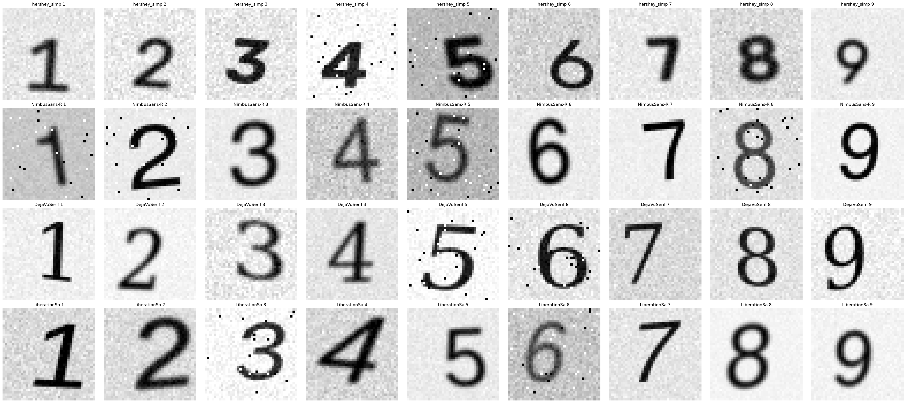
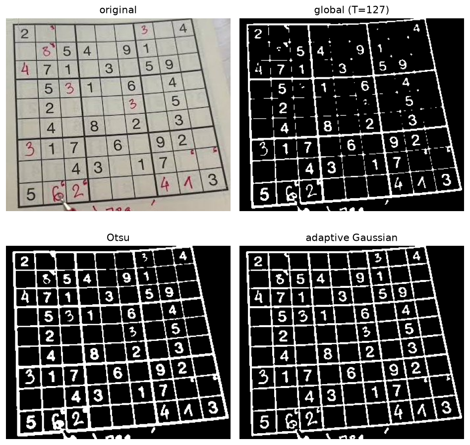
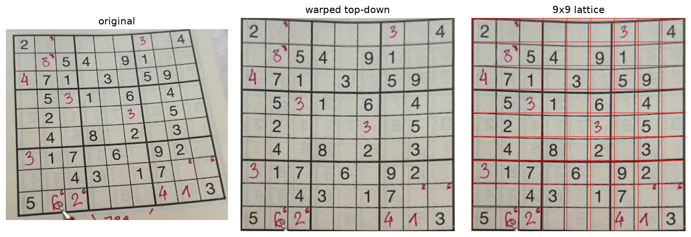
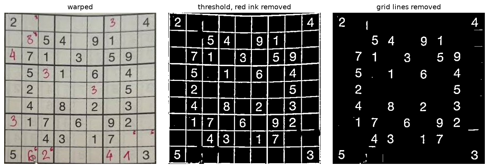
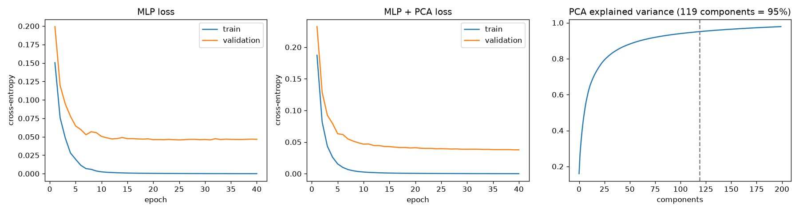
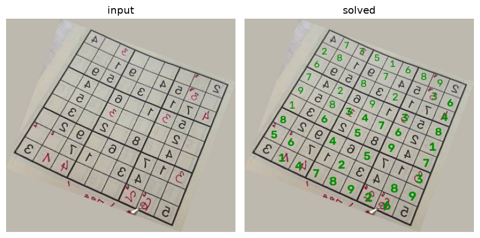
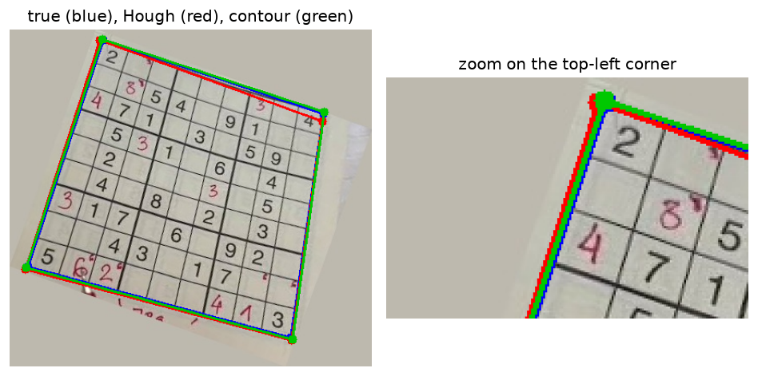
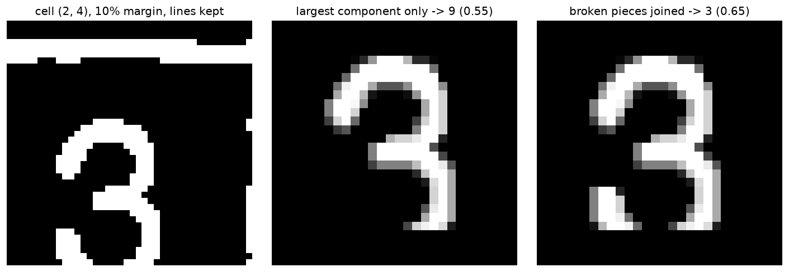
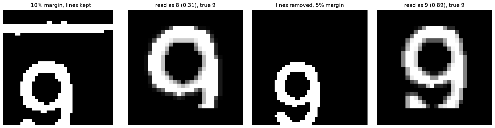
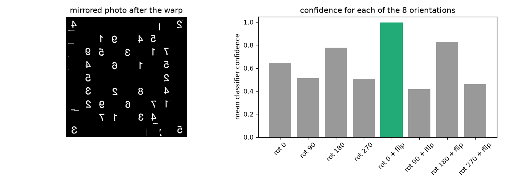

Moaz Allam, Zeyad Maher, Aly Youssef
CSCE 4603 - Course Project, Option 1: Photo Sudoku Reader
Input: a phone photo of a printed sudoku. Output: the same photo with the missing digits drawn in, and the solved
9x9 grid. Everything is our own code (OpenCV, NumPy, Matplotlib, scikit-learn), no pretrained models or ready-made
solvers. python main.py runs the whole project (about 2 minutes on CPU).
| Step | Method | Lectures |
|---|---|---|
| 1 Threshold | grayscale, 5x5 Gaussian, adaptive Gaussian threshold (block 15, C 8) | 03, 05 |
| 2 Grid | largest contour -> convex hull -> 4 corners; Canny + Hough as fallback; Harris as a check | 04b, 06, 07, 08 |
| 3 Warp | homography to a 450x450 square, 81 cells, inverse kept for step 6 | 13 |
| 4 Cells | grid lines removed with opening, red ink masked, connected components, 28x28 crop | 04, 04b |
| 5 Digits | KNN, SVM, MLP, each with and without PCA, trained on synthetic digits | 06, 10, 11 |
| 6 Solve | 8 orientations tried, backtracking (fewest options first), drawn back with the inverse homography | 13 |
One phone photo of a printed puzzle (343x295, tilted, page curled at the top, answers in red pen). We made 17 more
photos from it by rotating (-30 to 30, 90, 180 degrees) and flipping left to right (augment.py), so 18
photos. Ground truth: 9 lines of 9 digits (0 = empty) and the 4 grid corners, marked by hand on the original and moved
with the same transform for the copies.
| Set | Source | Size | Used for |
|---|---|---|---|
| train | synthetic, 16 fonts (5 Hershey + 11 free TrueType) | 5760 | training |
| validation | synthetic, 4 other fonts | 1440 | all tuning |
| test | real digits cut from the 18 photos | 576 | final numbers only |
Validation is split by font (like the plan's split by puzzle), so it measures reading a font the model has not seen. Synthetic digits are drawn with random size, position, rotation, shear, stretch, blur, noise and contrast, then go through exactly the same step 4 code as the real cells.

The left side of the page is darker and light shows through from the back. Global T = 127 breaks the lines on the lighter right side. Otsu picks its T from the histogram and works on this photo, because the light only changes slowly across it; adaptive does not depend on that and keeps the thin lines everywhere. C = 2 picked up the print from the back of the page, C = 8 removes it. Grid detection with each threshold (same step 2 code):
| Threshold | Global (T = 127) | Otsu | Adaptive |
|---|---|---|---|
| Grids detected | 2/18 | 18/18 | 18/18 |
| Mean corner error | 0.06 cells | 0.10 cells | 0.08 cells |

Detected = all 4 corners within 1/4 cell of the hand-marked corners.
| Method | Detected | Mean error |
|---|---|---|
| Hough lines (outermost of each direction) | 9/18 | 0.25 cells |
| Hough + Harris (strongest response within 10 px) | 16/18 | 0.13 cells |
| Largest contour (final, Hough as fallback) | 18/18 | 0.08 cells |
The plan had Hough first and the contour as fallback; the numbers made us swap them. The page is curved, so a straight Hough line cannot pass through both ends of the top edge (failure 1). The contour follows the real border. The largest contour is turned into 4 corners with a convex hull and approxPolyDP, raising epsilon until 4 points are left. Each candidate is checked: warp the binary image and compare the white pixels on the 20 expected grid lines with the white pixels between them; below 0.3 it is rejected. On the original photo Harris and Hough corners are 4.5 px apart on average. For rotated grids we group Hough lines by the most common angle and the angle 90 degrees from it, instead of fixed near-horizontal / near-vertical groups, which failed at 20 and 30 degrees.
Corners are sorted by angle around their center, starting from the one with the smallest x + y. The sum/difference trick from the notes breaks near 45 degrees. getPerspectiveTransform + warpPerspective to 450x450 (50 px cells), and the inverse matrix is kept for step 6.

Grid lines are removed before cutting: opening with a 1x45 and a 45x1 line kernel keeps only the lines (no digit stroke is 45 px long), the line masks are dilated along their direction to cover the curved parts, and subtracted. Both kernels have the same length so it works for sideways grids too. Red pen is removed where R - G > 15 (black ink is 0 to 5, red ink about 25); painting it white instead left outlines that looked like digits. Each cell (5% margin) gets a 2x2 opening, then connected components: keep components with 2% to 60% of the cell area, longest side at least 30% of the cell, not a full-width line, and center in the middle 60%. The one nearest the center is the digit; pieces that overlap its box (3 px margin) are joined back (failure 2), thin dashes are not. No component = empty. The crop is padded to a square and resized to 20x20 inside 28x28.

Empty / filled accuracy: 100% (1458/1458 cells). Without the 2x2 opening it is also 100%, because line removal already cleans the cells. Before line removal the opening was needed.
Feature = the 784 pixels of the 28x28 crop (0 to 1). PCA keeps 119 components (95% of the variance). Settings were picked on validation only; the test set was used once at the end.
| Model | Settings tried | Chosen | Val acc | Test acc |
|---|---|---|---|---|
| KNN | k = 1, 3, 5, 7, 9 | k = 1 | 0.990 | 1.000 |
| SVM | linear C=1; rbf C=1, 10 | rbf, C = 10 | 0.992 | 1.000 |
| MLP | (64), (128), (128, 64) | (128, 64) | 0.986 | 1.000 |
| KNN + PCA | same | k = 1 | 0.992 | 1.000 |
| SVM + PCA | same | rbf, C = 10 | 0.995 | 1.000 |
| MLP + PCA | same | (128, 64) | 0.988 | 1.000 |
All six get all 576 test digits right, so precision, recall and F1 are 1.000 for every digit and the confusion matrices are diagonal (results/step5_confusion.png, step5_report.txt). This does not mean the models are equally good: the test set has only 32 different printed digits (see Limitations). Validation, from unseen fonts, does separate them: SVM + PCA is best (0.995), MLP worst (0.986). PCA helped all three a little on validation.
MLP: ReLU, softmax output, cross-entropy, Adam (lr 0.001, batch 64), 40 epochs, trained one epoch at a time with partial_fit. Training loss goes to almost 0 while validation loss stops at about 0.04 to 0.05 after epoch 15, so it over-fits a little; we keep the epoch with the lowest validation loss.

Fonts matter most. With only OpenCV's Hershey fonts the model learned their shapes (flat-topped 3, 1 with a base) and read 3 as 8 and 6 as 5. SVM test accuracy by training fonts:
| Training fonts | Hershey only (4) | 4 TrueType | Hershey + 4 TrueType | all 16 |
|---|---|---|---|---|
| Test acc | 0.833 | 1.000 | 1.000 | 1.000 |
4 TrueType fonts are already enough for our puzzle, but our puzzle is in a Helvetica-like font and two training fonts (Nimbus Sans, Liberation Sans) are Helvetica / Arial clones. We keep all 16 for other fonts.
The warped grid can be rotated or mirrored (rotated photo, or a front camera that mirrors). We read the cells in all 8 orientations (4 rotations, with and without flip) and keep the one with the highest mean classifier confidence. KNN with k = 1 always says 100%, so the reader uses SVM + PCA (best validation among models with real probabilities). The givens are checked for repeated digits in rows, columns and boxes, then solved by backtracking that always fills the cell with the fewest options. If the grid does not have exactly one solution, the least sure digits (up to 10) are changed one at a time to their second choice, and a change is kept only if the puzzle then has exactly one solution. Our first version accepted any change that made the grid solvable (5 tries); with it, 5 photos with a single misread digit were still not solved correctly. In the final runs no retry was needed. Each empty cell center is mapped back with the inverse homography and the digit is drawn there, scaled to the cell size in the photo.

| Required number | Result |
|---|---|
| Grid detection rate | 18/18 (mean corner error 0.08 cells) |
| Digit accuracy, 6 setups | 1.000 each on 576 real test digits (val 0.986 to 0.995) |
| Empty / filled cells | 1458/1458 |
| Puzzles solved correctly end to end | 18/18 |
All four happened while building the pipeline; failures.py makes each figure again.
1. Hough corners on a curved page. The top edge bends, so the outermost straight Hough line cuts below the true corner on one side. Hough found only 9/18 grids within 1/4 cell; fixed by using the contour first.

2. Broken stroke. The threshold broke the bottom tail off a 3. Keeping only the largest component gave a 9; joining pieces that overlap the digit's box gives a 3.

3. Digit cut by the cell margin. Because of the curl, digits near the top sit low in their cells. The old 10% margin cut the 9's tail, and it was read as 8 in the rotated copies. Removing the grid lines first allows a 5% margin.

4. Mirrored photo. Read as it is, a mirrored grid gives nonsense (mostly 8 and 9) and the solver fails. The correct orientation has clearly the highest confidence (0.99, next best 0.83). The puzzle's givens are symmetric under 180 degree rotation, so the empty / filled pattern alone could not tell the orientation.
